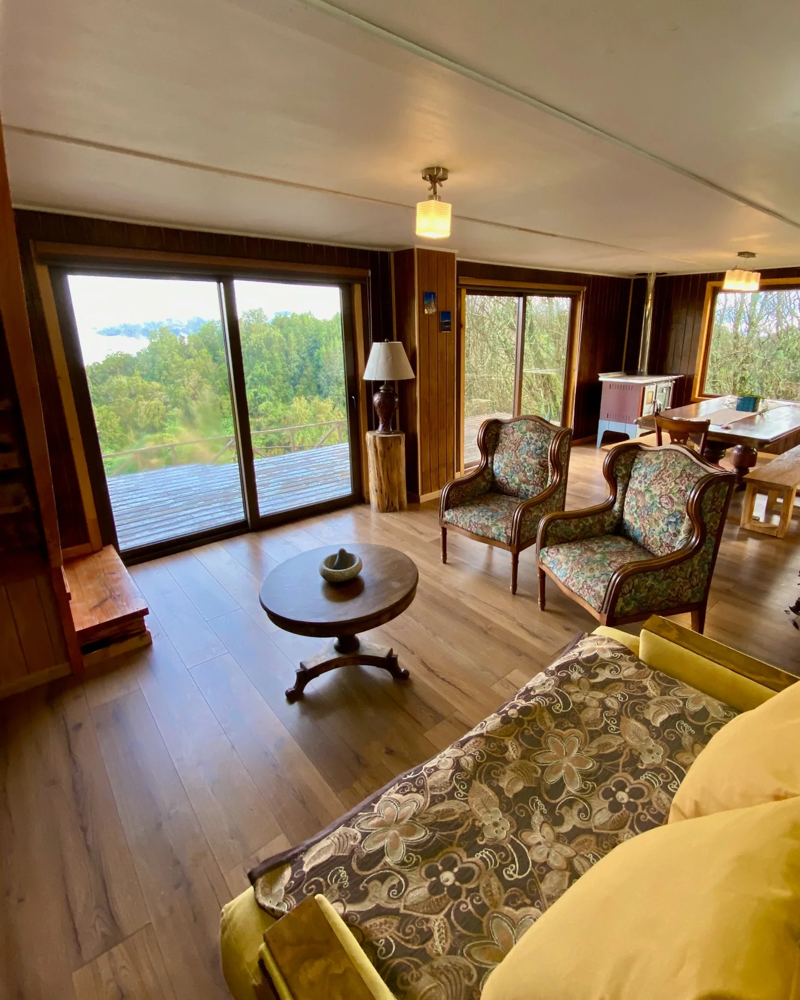
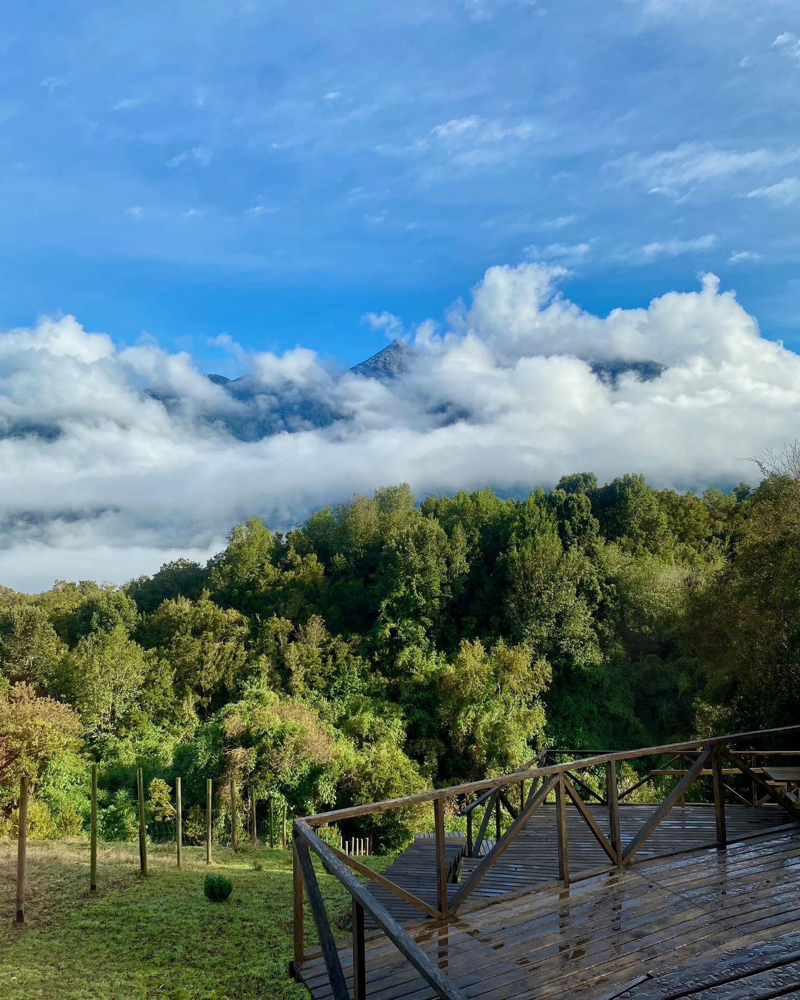
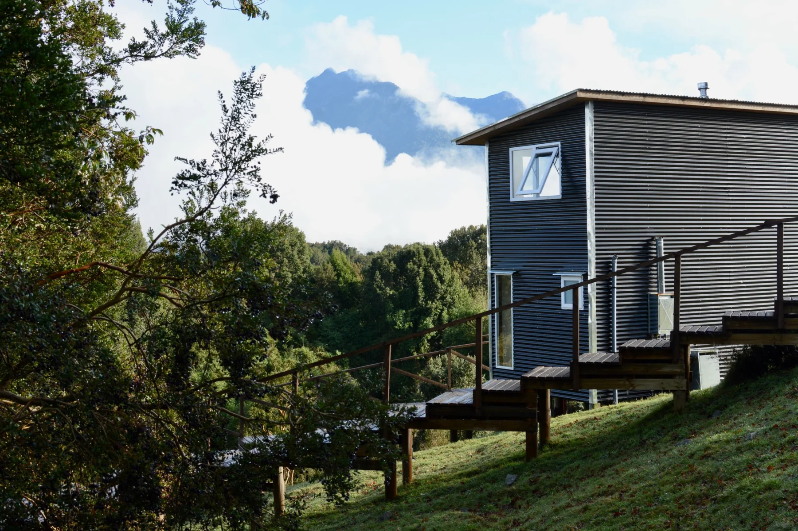
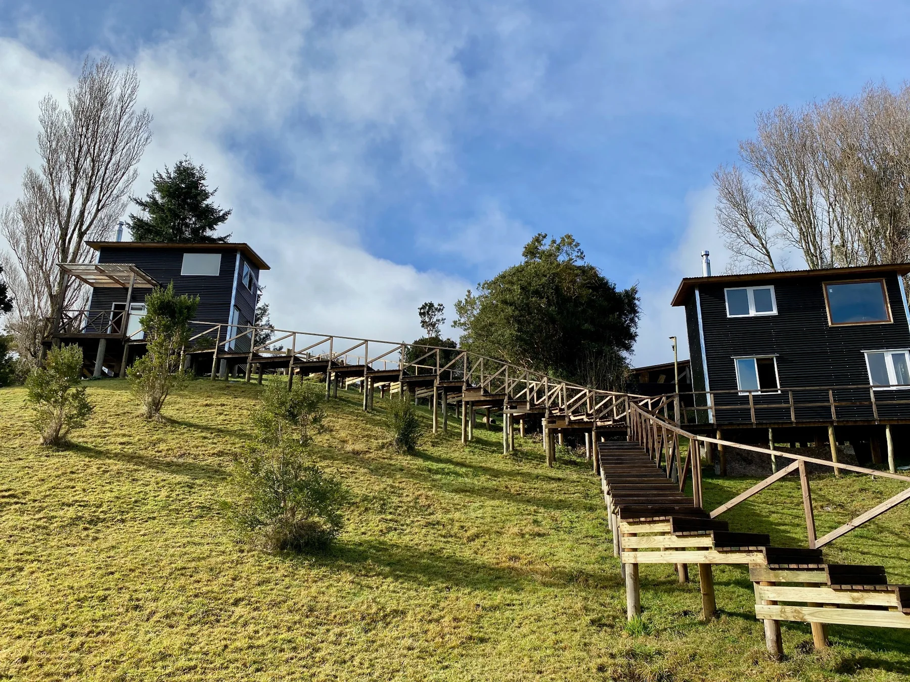
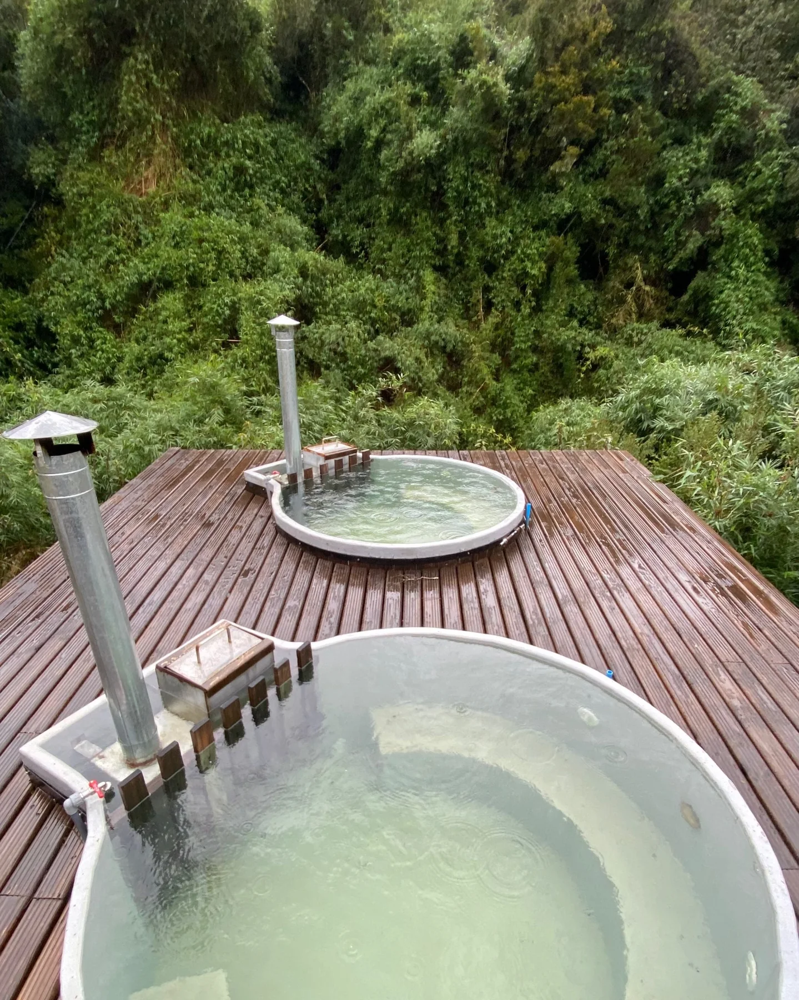
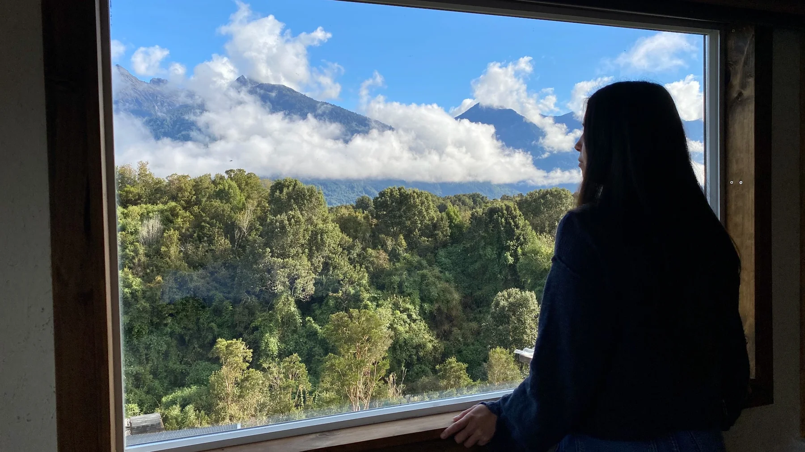
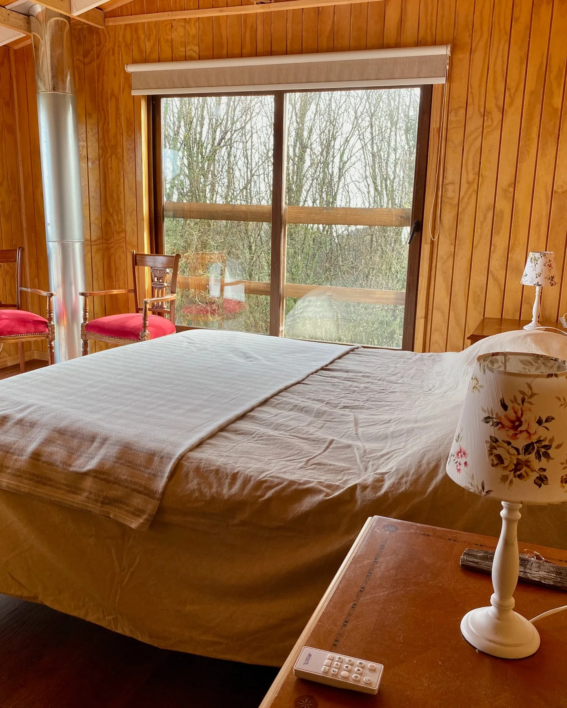
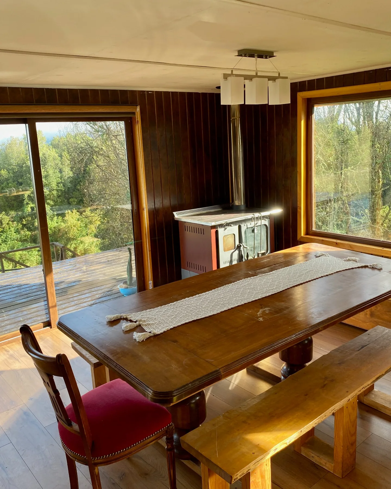

Experiencia Bed & Breakfast
Casa principal
Espacios comunes amplios, living, comedor y vistas privilegiadas.
- 2 habitaciones dobles
- 2 habitaciones triples

Bed & Breakfast
Un refugio para descansar y disfrutar la naturaleza, a solo 8 minutos del centro de Cochamó.
Consultar disponibilidadNaturaleza y calma
Rodeado de bosque y montañas, Refugio Mirador Cochamó ofrece una estadía sencilla, acogedora y conectada con el paisaje.

Montañas, bosque y nubes que transforman el paisaje durante todo el día.
A solo 8 minutos en auto del centro de Cochamó.
Baños calientes a leña, disponibles con reserva adicional.
Elige tu forma de hospedarte

Experiencia Bed & Breakfast
Espacios comunes amplios, living, comedor y vistas privilegiadas.

Más privacidad
Tres espacios independientes para disfrutar el entorno con mayor intimidad.

Una pausa entre el bosque
Relájate al aire libre, rodeado de naturaleza. El uso de los hot tubs se reserva por separado y está sujeto a disponibilidad.
Consultar disponibilidad →Galería



Cerca de todo, rodeado de naturaleza
Una ubicación cómoda para conocer el pueblo, recorrer los alrededores y volver a descansar en un entorno tranquilo.
Hospedaje: Casa principal y Tiny Houses
Hot tubs: Con reserva adicional
Mascotas: No se admiten
Abre la ubicación de Refugio Mirador Cochamó en Google Maps.
Ver mapa →Reservas
Escríbenos por WhatsApp o completa el formulario de reserva. Te responderemos con disponibilidad y valores.